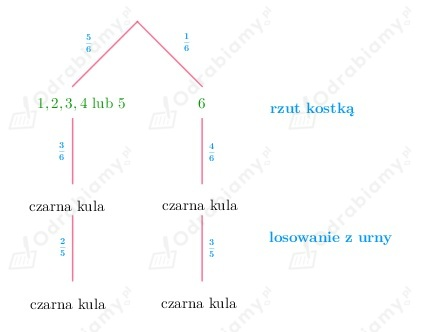
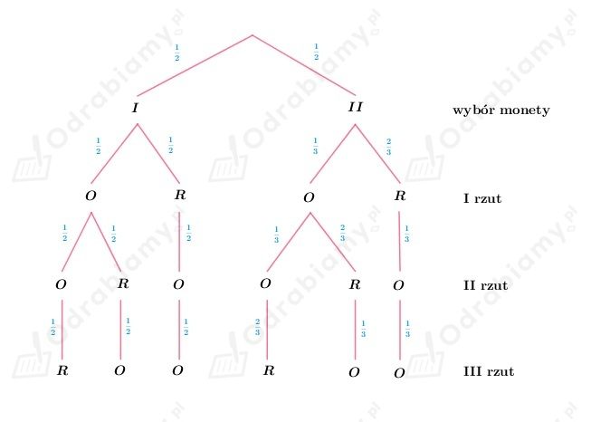
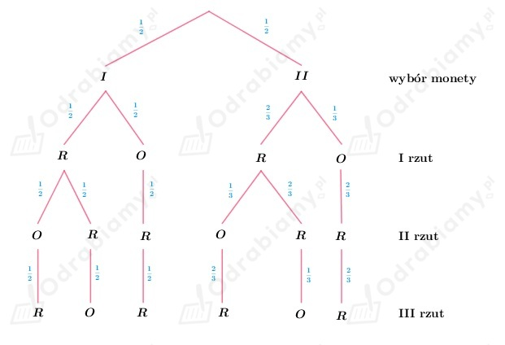

Z treści zadania wiemy, że w pierwszej urnie są 2 kule białe i 4 kule czarne, natomiast w drugiej urnie są 3 kule białe i 3 kule czarne.
Rzucamy raz kostką:
A - wylosowano dwie kule czarne
B1 - wylosowane kule pochodzą z pierwszej urny
B2 - wylosowane kule pochodzą z drugiej urny
Przyjrzyjmy się rysunkowi drzewka:

Wobec tego:
oraz
Obliczamy wartość szukanego prawdopodobieństwa:
Z treści zadania wiemy, że rzucając pierwszą monetą prawdopodobieństwo wyrzucenia orła i reszki jest takie samo (wynosi 1/2), natomiast rzucając drugą monetą prawdopodobieństwo otrzymania orła jest równe 1/3, a reszki 2/3.
Wykonujemy trzy rzuty losowo wybraną monetą.
a)
A - wypadły dwa orły
B1 - rzucono I monetą
B2 - rzucono II monetą
Przyjrzyjmy się wynikom przedstawionym na drzewku:

Wobec tego:
oraz
Obliczamy wartość szukane prawdopodobieństwa:
b)
A - wypadły dwie reszki
B1 - rzucono I monetą
B2 - rzucono drugą monetą
Przyjrzyjmy się wynikom przedstawionym na drzewku:

Wobec tego:
oraz
Obliczamy wartość szukane prawdopodobieństwa:
| Schemat Bernoulliego W schemacie n prób Bernoulliego prawdopodobieństwo otrzymania k sukcesów wyraża się wzorem: gdzie p oznacza prawdopodobieństwo sukcesu, a q - prawdopodobieństwo porażki w pojedynczej próbie (q=1-p). |
Z treści zadania wiemy, że rzucamy cztery razy monetą. Wobec tego n=4.
W rzucie monetą prawdopodobieństwo wyrzucenia orła jest takie samo jak prawdopodobieństwo wyrzucenia reszki i wynosi 1/2.
Więc:
a)
Orzeł nie wypadnie ani razu, więc k=0.
Obliczamy prawdopodobieństwo powyższego zdarzenia:
b)
Wypadną dokładnie trzy orły, więc k=3.
Obliczamy prawdopodobieństwo powyższego zdarzenia:
| Schemat Bernoulliego W schemacie n prób Bernoulliego prawdopodobieństwo otrzymania k sukcesów wyraża się wzorem: gdzie p oznacza prawdopodobieństwo sukcesu, a q - prawdopodobieństwo porażki w pojedynczej próbie (q=1-p). |
Z treści zadania wiemy, że rzucamy 10 razy monetą, więc: n=10.
W rzucie monetą prawdopodobieństwo wyrzucenia orła jest takie samo jak prawdopodobieństwo wyrzucenia reszki i wynosi 1/2.
Więc:
a)
Reszka wypadnie 3 razy, więc: k=3.
Obliczamy prawdopodobieństwo powyższego zdarzenia:
b)
Reszka wypadnie co najmniej 3 razy.
Obliczmy prawdopodobieństwo zdarzenia przeciwnego: reszka wypadnie mniej niż trzy razy, a więc k=0 lub k=1 lub k=2.
Obliczamy prawdopodobieństwo powyższego zdarzenia:
Zatem prawdopodobieństwo zdarzenia, że reszka wypadnie co najmniej 3 razy wynosi:
| Schemat Bernoulliego W schemacie n prób Bernoulliego prawdopodobieństwo otrzymania k sukcesów wyraża się wzorem: gdzie p oznacza prawdopodobieństwo sukcesu, a q - prawdopodobieństwo porażki w pojedynczej próbie (q=1-p). |
Z treści zadania wiemy, że rzucamy 6 razy kostką, więc: n=6.
W rzucie kostką prawdopodobieństwo wyrzucenia liczby oczek mniejszej od 3 (1 lub 2) wynosi 2/6.
Więc:
a)
Liczba oczek mniejsza od 3 wypadnie dokładnie 2 razy, więc: k=2.
Obliczamy prawdopodobieństwo powyższego zdarzenia:
b)
Liczba oczek mniejsza od 3 wypadnie co najwyżej 2 razy, więc: k=0 lub k=1 lub k=2.
Obliczamy prawdopodobieństwo powyższego zdarzenia:
| Schemat Bernoulliego W schemacie n prób Bernoulliego prawdopodobieństwo otrzymania k sukcesów wyraża się wzorem: gdzie p oznacza prawdopodobieństwo sukcesu, a q - prawdopodobieństwo porażki w pojedynczej próbie (q=1-p). |
Z treści zadania wiemy, że każdy z chłopców rzuca piłką do kosza 5 razy.
A - piłka trafia do kosza co najmniej 9 razy (zatem trafia 9 razy lub 10 razy).
Mamy trzy możliwe sytuacje:
(1) Tomek trafia do kosza 5 razy, a Romek 4 razy.
(2) Tomek trafia do kosza 4 razy, a Romek 5 razy.
(3) Tomek trafia do kosza 5 razy i Romek trafia do kosa 5 razy.
Wobec tego:
Z treści zadania wiemy, że Basia trafia do kosza z prawdopodobieństwem równym:
zatem nie trafia do kosza z prawdopodobieństwem równym:
A - Basia trafiła co najmniej jeden raz do kosza (k>0)
A' - Basia nie trafiła ani razu do kosza (k=0)
Obliczamy prawdopodobieństwo zdarzenia A' przy założeniu, że Basia wykonała n rzutów do kosza:
Zatem:
Zauważmy, że:
Zatem dla liczby rzutów większej bądź równej 5 (n ≥ 5) prawdopodobieństwo co najmniej jednego trafienia będzie większe od 0,999.
Wnioskujemy, że Basia powinna wykonać co najmniej 5 rzutów do kosza.